After completing this lesson, you'll be able to:
FME Flow Automations rely on sending messages between triggers and actions. When configuring triggers and actions, you use parameters to customize how they run and process data. For example, an FME Flow Schedule trigger has parameters for the Schedule Type and how often the schedule should run, which you provide values to control how the trigger functions.
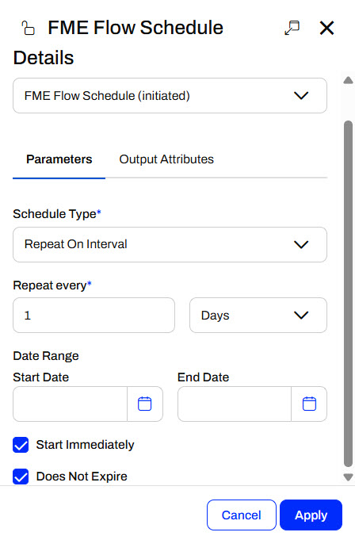
When you configure a Run a Workspace action, the workspace's published parameters appear, allowing you to customize its behavior.
The values you enter for a trigger's or an action's parameters will control how the node runs. The value you enter will depend on the parameter type and what FME Flow expects as input for the parameter. For example, FME Flow has you pick a connection for a Connection parameter. Source and destination dataset parameters take file path locations or URLs to web-based datasets as input.
Automation Parameters are global to an Automation. They allow you to reference a value multiple times at multiple components of your workflow without explicitly defining it each time.
You create and edit Automation Parameters in the Automation Parameters Editor, which you open from the Automations toolbar.
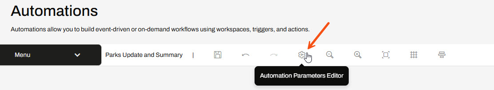
You may also open the editor to create Automation Parameters directly from parameter inputs.
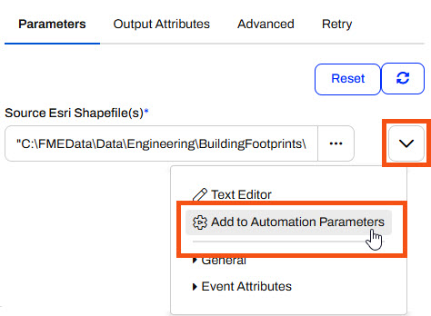
Every Automation parameter begins with the global. prefix and the parameter name follows. When you reference this key, FME Flow will use the value saved to the parameter. For example, you create the SourceDataset_SHAPEFILE parameter that you will use in a source dataset parameter for a workspace. For the workspace source dataset parameter, you enter global.SourceDataset_SHAPEFILE for it, and the workspace will read from the file path value.
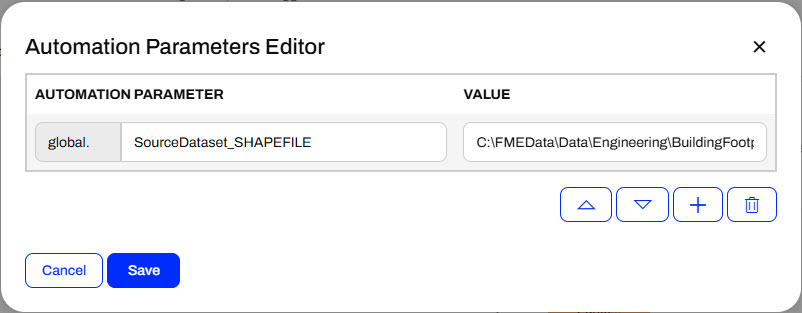
Automation Parameters are reusable throughout an Automation. You may reference them multiple times across multiple nodes. If the value changes, you update the value in the Automation Parameters Editor, and your workflow uses the new value anywhere referencing the parameter. You do not have to update a value multiple times at locations throughout your Automation, which prevents errors if you forget to update a parameter.
Automations function by passing JSON-formatted messages between components and nodes. When a trigger receives a message to kick off the Automation, it passes a message to the following action and triggers it to run. Once the action completes, it passes another message to the following actions. While it is possible to parse key pieces of information from the entire JSON message, FME Flow makes this task easier by extracting key-value pairs from the JSON messages and creating attributes. In Automations, you can link these attributes to parameter values in downstream actions to further control how they function based on information from upstream in the Automation.

Each trigger and action has pre-set Output Attributes, called Event Attributes, specific to the trigger or action type. You may reference Output Attributes in action parameters downstream from the trigger or action that creates the attribute. You should be cautious if multiple actions produce the same attributes. FME Flow only stores one value for each attribute, so the value from the second action will overwrite the attribute value from the first action. If you need values from multiple actions, create Custom Attributes and provide a unique key for each action. Custom Attributes are Output Attributes you define manually, meaning you make the attribute name and assign a value to it.
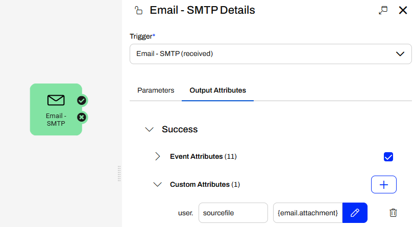

Jennifer continues with her Incoming Building Footprints Automation. Now that she's confident the Automation triggers when someone adds new files to the BuildingUpdates folder, she will use a Filter messages action and a Run a Workspace action to process each shapefile and update a geodatabase.
Follow Jennifer's steps as she publishes her workspace to FME Flow and adds it to her Automation.
Jennifer starts by running her workspace (C:\FMEData\Workspaces\AutomateWorkflowsWithFMEFlow\process-incoming-data.fmw) in FME Workbench to process the shapefiles and write them to a geodatabase. Once the translation is complete, she selects the writer and clicks the View Written Data icon.
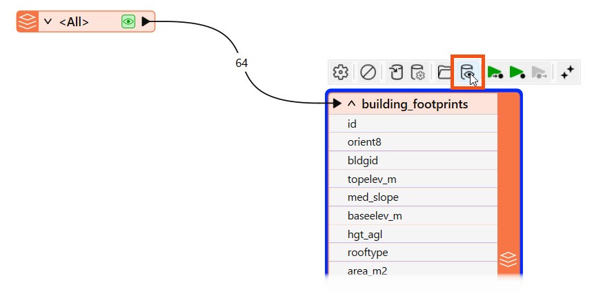
The written data opens in the Data Preview window.
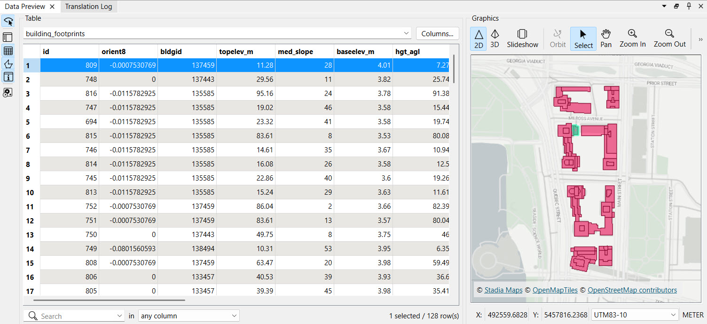
The workspace processes the building updates as Jennifer expects, so it is ready to deploy on FME Flow. Jennifer clicks Publish to open the publishing wizard.
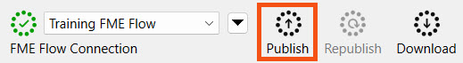
She ensures FME Workbench successfully connects to FME Flow, creates the Training repository for the workspace, and clicks Next.
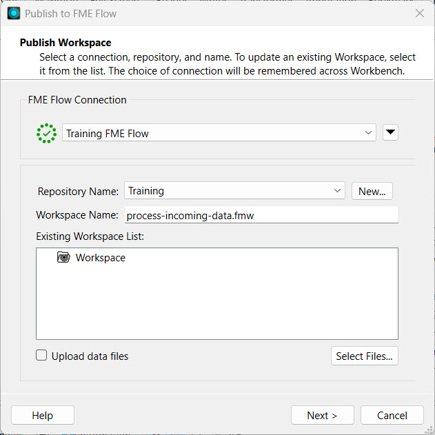
She registers the workspace with the Job Submitter services and clicks Publish.
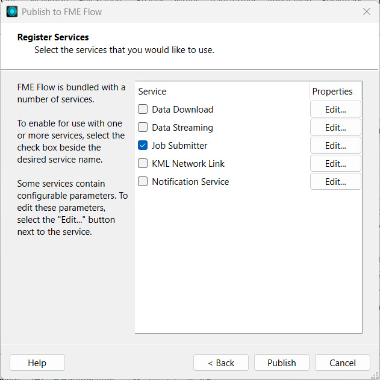
Jennifer checks the Translation Log to ensure she published the workspace successfully, and then navigates to FME Flow.
If the buildingfootprints.gdb already exists in Resources > Data > Output, you may skip this step and move on to Step 4.
When Jennifer ran her workspace on FME Workbench, FME wrote the destination geodatabase to her local computer. She wants others to be able to access the geodatabase containing all the building updates for their workflows on FME Flow. Jennifer opens Resources > Data > Output. She clicks Upload and selects Folder.
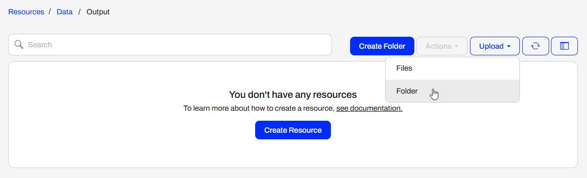
Jennifer goes to C:\FMEData\Data\Engineering\BuildingFootprints\ and selects buildingfootprints.gdb to upload.
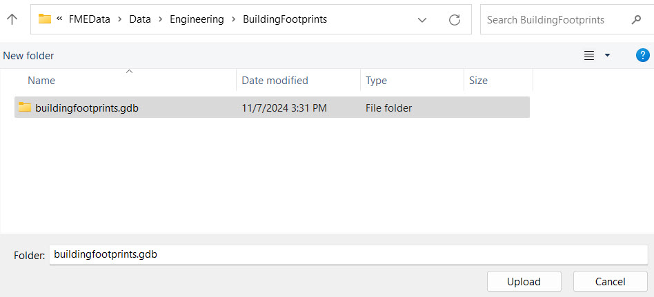
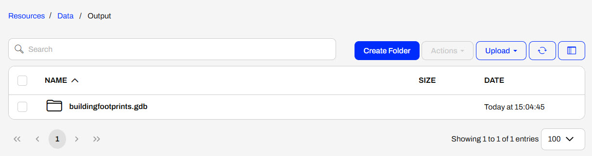
Jennifer navigates to her Incoming Building Footprints Automation and clicks Stop Debug. The Automation stops polling the BuildingUpdates folder for creations and modifications, and allows Jennifer to edit the nodes.
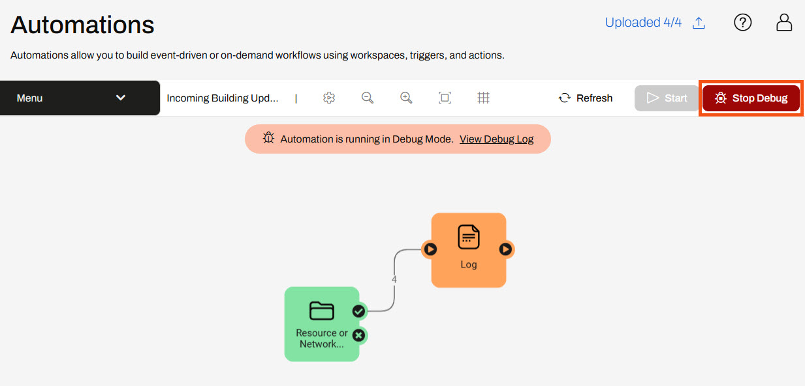
Jennifer opens the Log actions details by clicking the Log icon.
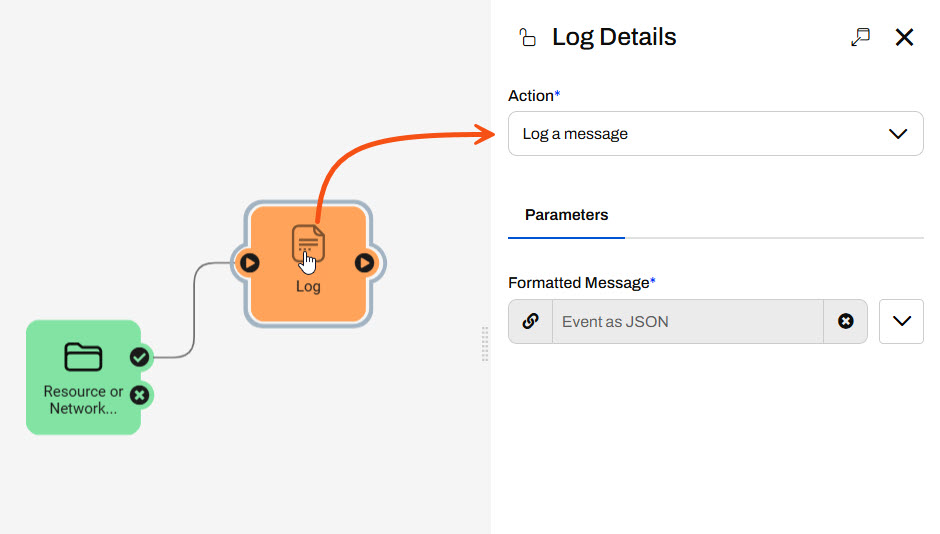
She changes the Action to Filter messages. For the Attribute parameter, Jennifer selects File Path and enters .shp for the Contains parameter. FME Flow will filter the event file path for .shp files only. Since shapefiles contain four files, FME Flow sends four CREATE events from the trigger, and this workflow only requires one event to trigger for each shapefile. Jennifer clicks Apply to update the action and close the Filter Details.
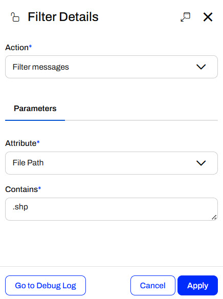
Jennifer attaches another internal action to the Filter success port. She configures it to run her process-incoming-data.fmw workspace.
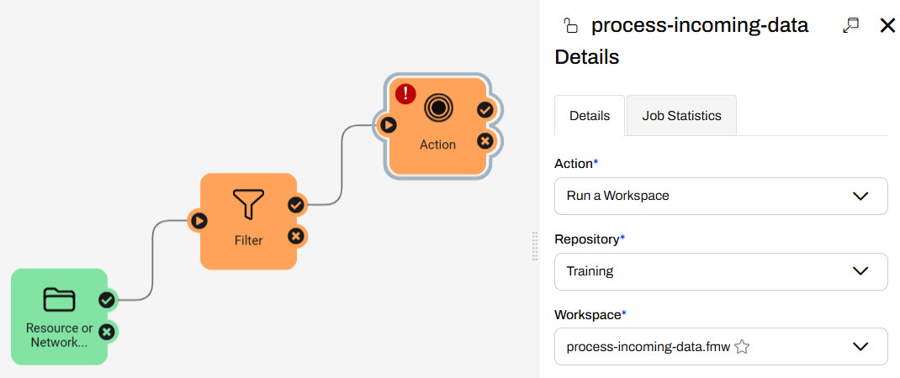
Next, Jennifer configures the workspace parameters. For Source Esri Shapefile(s), Jennifer opens the parameter drop-down options, expands Directory, and selects the File Path attribute.
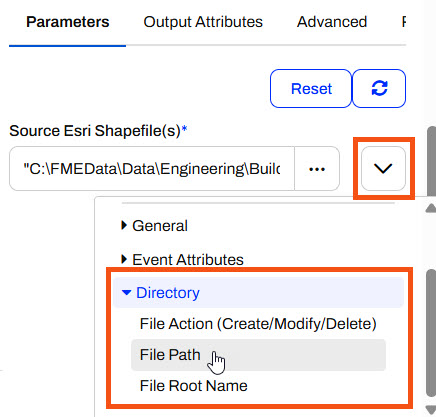
For the File Geodatabase parameter, Jennifer clicks the ellipsis and navigates to the buildingfootprints.gdb she uploaded to Resources.
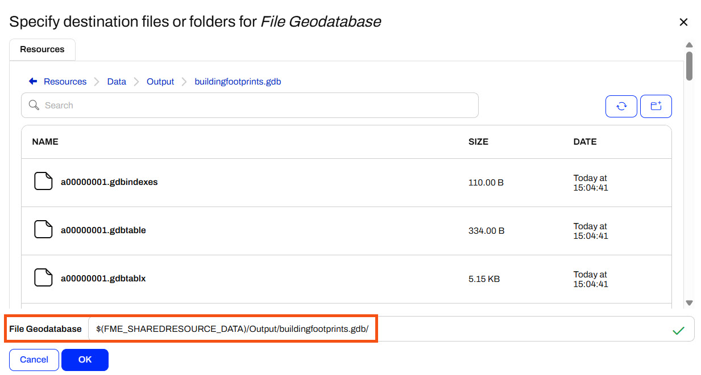
Jennifer clicks Apply to save the workspace details and close the pane.
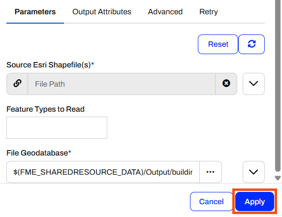
Jennifer saves the Automation and then clicks Start to begin running the Automation, this time using Production Mode.
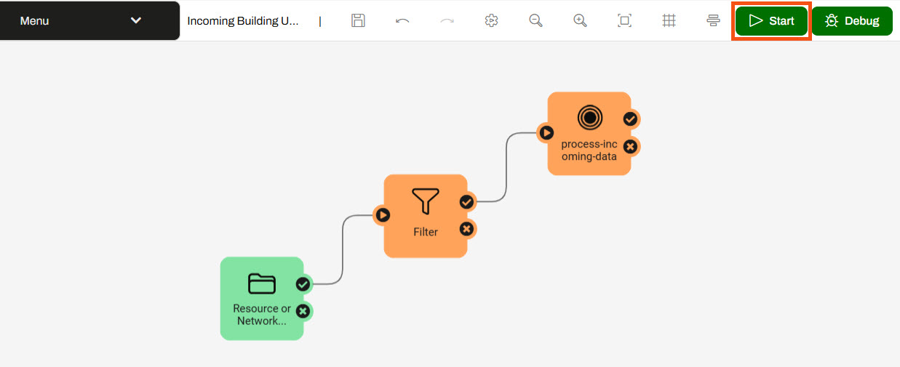
Jennifer clicks Start on the pop-up warning, and the Automation canvas shows it is running in Production Mode.

Jennifer goes to Resources and opens the BuildingUpdates folder. She uploads another shapefile of updates. She clicks Upload and selects Files. She then selects all four files that comprise a shapefile of updates (C:\FMEData\Data\Engineering\BuildingFootprints).
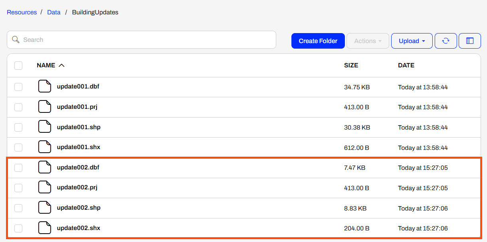
Jennifer returns to the Automation and sees that the message counts reflect the shapefile she uploaded, and that only one file passes the Filter action.

Jennifer opens the Automation Menu and selects View Triggered Jobs.
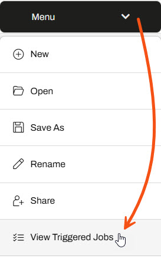
The FME Flow Jobs page opens and shows the jobs completed by this Automation. Jennifer sees that her workspace was processed successfully.

Next, Jennifer goes back to the buildingfootprints.gdb in Resources. She checks that the timestamp was recently updated, which indicates that the workspace just updated the data. She clicks the box to select the geodatabase, then expands the Actions drop-down and selects Download.
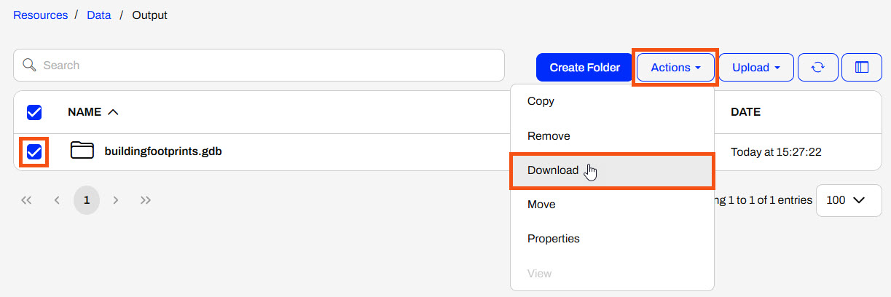
Jennifer opens her Downloads folder and extracts the zip file containing the geodatabase.

Next, she opens FME Data Inspector and clicks Open Dataset from the Get Started section. For Format, Jennifer selects Esri Geodatabase (File Geodb Open API) and then selects the extracted geodatabase in her Downloads.
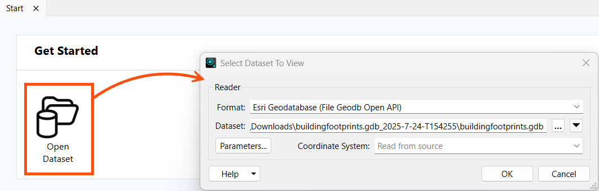
She clicks OK, and the data opens in Data Inspector.
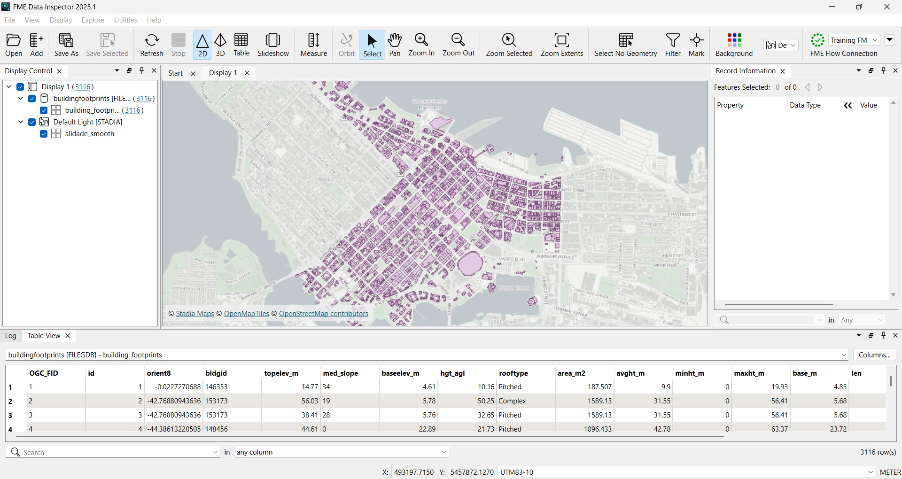